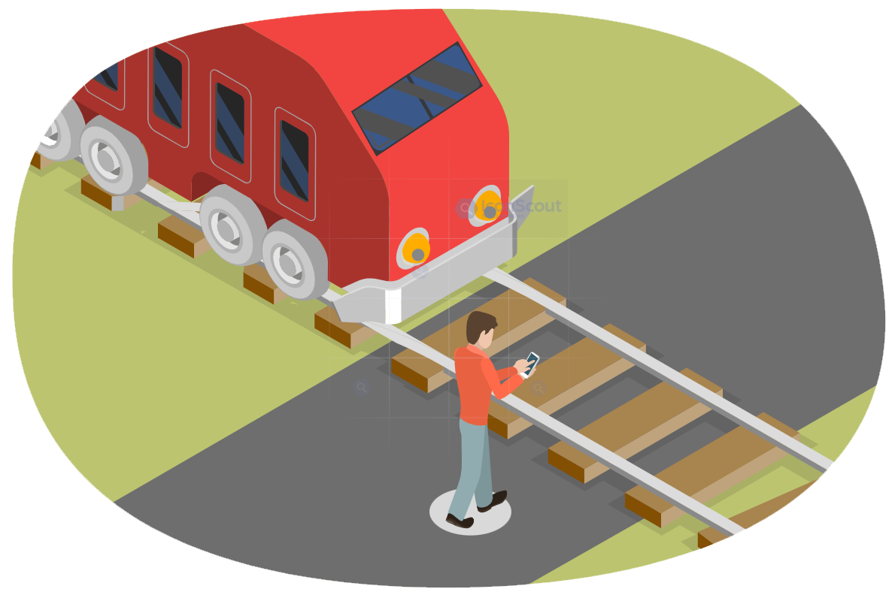

<html>

<head>

    <title> QuickGate - Train Detection and Alert System </title>

    <link rel = "stylesheet" href="style.css">

    <link rel="stylesheet" href="https://cdnjs.cloudflare.com/ajax/libs/font-awesome/6.4.2/css/all.min.css">

    <meta name = "viewport" content="width =device-width, initial-scale=1">

    <link rel="preconnect" href="https://fonts.googleapis.com">
<link rel="preconnect" href="https://fonts.gstatic.com" crossorigin>

<link rel="preconnect" href="https://fonts.googleapis.com">
<link rel="preconnect" href="https://fonts.gstatic.com" crossorigin>

<script src="https://cdn.jsdelivr.net/gh/cferdinandi/smooth-scroll/dist/smooth-scroll.polyfills.min.js"></script>


<link href="https://fonts.googleapis.com/css2?family=Kaushan+Script&family=Poppins:ital,
wght@0,100;0,200;0,300;0,400;0,500;0,600;0,700;0,800;0,900;1,100;1,200;1,300;1,400;1,500;
1,600;1,700;1,800;1,900&display=swap" rel="stylesheet">

</head>

<body>

    <section id = "banner">
        
        <div class = "banner-text">

            <h1> Quick Gate </h1>
            <h2> Train Alert and Detecting System </h2>

            <div class = "banner-btn">
                <a href="#intro"><span></span> Introduction </a> 
                <a href="#service"><span></span> Our Service </a> 
            </div>
        </div>
    </section>

    <div id = "sideNav">
        <nav>
            <ul>
                <li> <a href = "home.html"> HOME </a></li>
                <li> <a href = "scope.html"> DOMAIN </a></li>
                <li> <a href = "milestones.html"> MILESTONES </a></li>
                <li> <a href = "documents.html"> DOCUMENTS </a></li>
                <li> <a href = "presentations.html"> PRESENTATIONS </a></li>
                <li> <a href = "aboutUs.html"> ABOUT US </a></li>
                <li> <a href = "#footer"> CONTACT US </a></li>
            </ul>
        </nav>
    </div>

    <div id = "MenuBtn">
        
    </div>

<!--Features-->

<section id = "intro"> 
    <div class="title-text">
        <p> FEATURES </p>
        <h1> Why We Choose this Topic? </h1>
    </div>

    <p class = "Paragraph2"> Every 3 hours, A person dies in Road Accident. <br>
                             Every 3 days, a Child dies in Road Accident. <br>
                             So many railway-crossing collisions happen in Sri Lanka annually. <br>
                             These railway-crossing collisions cost many loss of lives and property damages annually.
    </p>

    <div class="intro-text">
        <h1> Introduction </h1>
        
        <div class = "image-1">
            <h4>Incidents, Deaths, Causalties at Railway Crossings from January to September in 2016 Sri Lanka</h4>
        </div>    
        
        
        <div class = "image-2">
            <h4>Details of Level Crossing Crashes between 2000 to 2010 </h4>
        </div> 
        
    </div><br/><br/><br/><br/><br/><br/><br/><br/><br/><br/><br/><br/><br/><br/>

    <div class = "div1">
        <p> We identified some major reasons for these collisions. Major reason for so much collisions in Sri Lanka is there 
            are so much unsafety unprotected railway crossings all around the Island. People cannot 
            see the upcoming railway crossings when they are driving the vehicle. Human Errors is also another fact for 
            railway collisions in Sri Lanka. That means citizens may misjudge the speed or distance of an approaching train, 
            leading to accidents or near-misses. And also, Citizens may not be aware of the dangers posed by railway 
            crossings or the proper safety procedures to follow when crossing tracks. Therefore, providing solutions to 
            reduce these collisions happening in railway crossings became a major need specially in Sri Lanka because many 
            human and animal lives and properties lost to the country annually. But from the government side, we cannot 
            see they are considering this as a big problem. They didn’t even take necessary steps to reduce these railway 
            crossing collisions like providing gates near railway crossings, signal and alarms likewise. As citizens who feel 
            this as a major problem in Sri Lanka, we need to find some solution to reduce these annual railway crossings 
            collisions since the government is not involving on this matter much. </p><br>
            
            <p> Currently, there is no proper solution to address the railway crossing collisions in Sri Lanka. So as 
            undergraduate students who are specializing in IT field, we propose a IT-based solution to address these railway 
            crossing collisions in Sri Lanka. Even though there are apps to alert train schedules and train routes, time tables, 
            there is no app to address the safety of citizens who are crossing the railway crossings in Sri Lanka. The “Train 
            Detection & Alert System” for citizens ins Sri Lanka project aims to address the challenges faced by citizens who 
            cross the railway crossings through the use of advanced technology and infrastructure improvements. To address 
            this problem, our research project proposes a system that utilizes various technologies, including IoT devices, 
            GPS tracking, machine learning algorithms, security technologies and real-time databases.</p><br>

            <p> Our Train Detection & Alert System includes multiple components, such as real-time tracking of trains and 
                vehicles near the railway crossing, alert system to vehicles which are moving towards to the railway crossing, 
                alert system to all the users who are near to the railway crossing, sending real-time train location details to relevant 
                IOT devices, security system for the system and predictive maintenance system. These all components work 
                together to detect potential safety hazards and prevent accidents from occurring. The project aims to create a userfriendly interface for the system, making it accessible to a wide range of users and enhancing the overall passenger 
                experience. Additionally, the system will be used by train authorities to monitor the railway crossings collisions, 
                helping to improve the overall efficiency and safety of citizens and taking relevant actions to reduce the collisions 
                happening in railway crossings. </p><br>
                
    </div>

</section> 
    
<section id = "feature"> 
    <div class = "feature-box">
        <div class = "features">

            <h1> Develop a system that utilizes GSM trackers on trains and IoT devices at railway 
                crossings to predict and alert potential blind spots on the train
                 </h1>
            <div class = "features-desc">
                <div class = "feature-icon">
                    <i class="fa fa-train"></i>
                </div>
                <div class = "feature-text">
                    <p> This is the first component by Biyanwila B.D.V.J - IT20212490 </p>
                </div>
            </div>

            <h1> Sending alerts to the users via the app and predicting the likelihood of crossing the 
                railway-crossing on a given day </h1>
            <div class = "features-desc">
                <div class = "feature-icon">
                    <i class="fa fa-car"></i>
                </div>
                <div class = "feature-text">
                    <p> This is the second component by Jayanga B.M.C - IT20188672 </p>
                </div>
            </div>

            <h1> Security analysis for the Train Alert and Detection System </h1>
            <div class = "features-desc">
                <div class = "feature-icon">
                    <i class="fa fa-lock"></i>
                </div>
                <div class = "feature-text">
                    <p> This is the third component by Amarasinghe C.D - IT201887064 </p>
                </div>
            </div>

            <h1> Sending the flooded messages from the IOT device for the SIM users who are within a 
                1.5km radius
                 </h1>
            <div class = "features-desc">
                <div class = "feature-icon">
                    <i class="fa fa-comments"></i>
                </div>
                <div class = "feature-text">
                    <p> This is the fourth component by Wijewardene L.L - IT20101824 </p>
                </div>
            </div>

        </div>
        <div class = "features-img">
            
        </div>
    </div>
</section>

<!--service-->

<section id="service">

    <div class="title-text">
        <p> SERVICES </p>
        <h1> We Provide a Solution to reduce the collisions in Railway Crossings </h1>
    </div>
    <div class="service-box">
        <div class="single-service">
            
            <div class = "overlay"></div>
            <div class = "service-desc">
                <h3> Mobile Application </h3>
                <hr>
                <p> Notified the user when a railway crossing is nearby via the Mobile App </p>
            </div>
        </div>
        <div class="single-service">
            
            <div class = "overlay"></div>
            <div class = "service-desc">
                <h3> IoT device </h3>
                <hr>
                <p> The IoT device near the railway crossing indicates a train is coming via an alarm sound </p>
            </div>
        </div>
           
        <div class="single-service">
            
            <div class = "overlay"></div>
            <div class = "service-desc">
                <h3> Mobile Application </h3>
                <hr>
                <p> Mobile application notifies the user when the user enter the railway crossing range </p>
            </div>
        </div>
            
        <div class="single-service">
            
            <div class = "overlay"></div>
            <div class = "service-desc">
                <h3> Flooded Mesages </h3>
                <hr>
                <p> Flooded messages are sent to the users near the railway crossing as SMS messages </p>
            </div>
        </div>
            
    </div>

</section>

<!--Footer-->

<section id="footer">
    
    <div class="title-text">
        <p> CONTACT </p>
        <h1> Connect with Us </h1>
    </div>
    <div class = "footer-row">
        <div class="footer-left">
            <h1>Find Us</h1>
            <p><i class="fa fa-location-arrow"></i>SLIIT Malabe Campus, New Kandy Road</p>
            <p><i class="fa fa-phone"></i>0117 544 801</p>
            <p><i class="fa fa-envelope"></i><a href="mailto:info@sliit.lk">info@sliit.lk</a></p>
        </div>
        <div class="footer-right">
            <h1>Email Us </h1>
            <p><a href="mailto:it20212490@my.sliit.lk">it20212490@my.sliit.lk</a><i class="fa fa-envelope"></i></p>
            <p><a href="mailto:it201886720@my.sliit.lk">it20188672@my.sliit.lk</a><i class="fa fa-envelope"></i></p>
            <p><a href="mailto:it20187064@my.sliit.lk">it201887064@my.sliit.lk</a><i class="fa fa-envelope"></i></p>
            <p><a href="mailto:it20187064@my.sliit.lk">it20101824@my.sliit.lk</a><i class="fa fa-envelope"></i></p>
        </div>
    </div>

    <div class="social-links">
        <a href = "https://www.facebook.com/"><i class="fa-brands fa-facebook"></i></a>
        <a href="https://www.instagram.com/"><i class="fa-brands fa-instagram"></i></a>
        <a href="https://twitter.com/"><i class="fa-brands fa-twitter"></i></a>
        <a href="https://www.youtube.com/"><i class="fa-brands fa-youtube"></i></a>
        <p>© 2023 All Rights Reserved. Design by Quick Gate Team</p>
    </div>

</section>

    <script>
        var MenuBtn = document.getElementById("MenuBtn")
        var sideNav = document.getElementById("sideNav")
        var menu = document.getElementById("menu")

        sideNav.style.right = "-250px";

        MenuBtn.onclick = function() {
            if(sideNav.style.right == "-250px") {
                sideNav.style.right = "0";
                menu.src = "Images/close.png";
            }
            else {
                sideNav.style.right = "-250px";
                menu.src = "Images/menu.png";
            }
        }

var scroll = new SmoothScroll('a[href*="#"]', {
	speed: 1000,
	speedAsDuration: true
});

    </script>

</body>

</html>